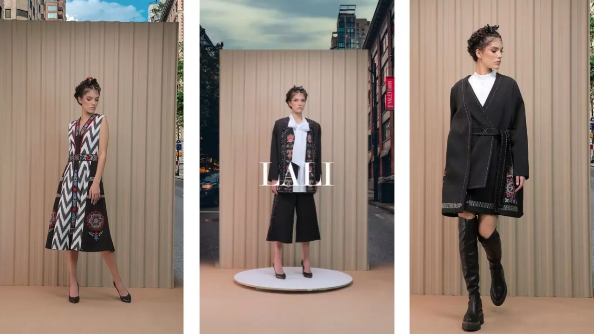

ABOUT LALI FASHION
Fashion designer Lali begins her career with a small atelier in Tashkent, running it since mid. 90s. By 2007 her atelier turns to a fashion house. Lali Fazilova graduates "Fashion Design and Construction" faculty under the " Institute of Textile and Light Industry in Tashkent". After getting her degree, she continue her practical experience working in the fashion houses of Vilnius and Alma-Ata. In 2005 successfully completes Professional Management Program 'PMP' under the Government of Japan". Certified participant of courses by "London College of Fashion" and "ARD & NT Institute Milano".